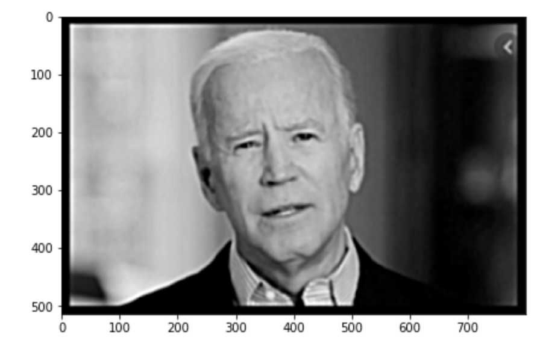
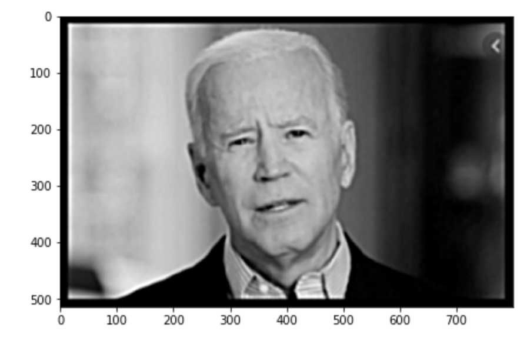

CS194 PROJECT Two - Alex Wu
Part One
Gradient magnitude computation is essentially a way to compute gradient, or the changes in magnitude between pixels within an image. To compute gradient for an image, we first compute its x-derivatives and y-derivatives. After we get the derivatives for both directions, we combine them together to the magnitude for gradient for each pixel.
The gradient magnitude is also a naive edge detection method if you binarize the output gradient magnitude array.
Process of calculating gradient magnitude:
After applying the Gaussian filter, the gradient image returns a much better and clearer version of the edges of the graph. The edge now is much clearer than before, and there is less noise presented in the image. The reason for this improvement is that Gaussiann filter averages out the noise, and thus making the gradient stands out more.
Straighten Images
original histogram
original image
straightened histogram
straightened image


We can see that the image of the buildings has not been straightened properly. I find that the reason behind this is due to the "edges" along the center building. Those edges are not perpendicular with the horizon, however, they occupy a large space and are very long, thus influencing our algorithm.
Part Two
Sharpened Images:
This is the result for the given image. The sharpened image
Other interesting image:
 

I download the image of Biden from the internet and apply a gaussian filter to it (the middle image). Then, I sharpen the image. As we can see, the sharpened image is not as clear and good as the original image. However, it does take away some blurring effects.
Hybrid Images:
The input iamges is the president & a monkey. The output is the hybrid.
The fourier analysis of the first input image, and the fourier analysis after applying the gaussian filter.
 [
[
The fourier analysis of the second input image, and the fourier analysis after applying the laplacian filter.
Other images:


Noteably, the third group of images, the hybrid of rem and emilia (the two anime girls) do not work that well. The reason behind this is that the length of the face of rem annd emilia does not match that well, as a result, some discprency can be found in the image.
Gaussian & Laplacian Stacks

Multiresolution Blending
The third group of blending does not blend that well, due to the fact that iron man's mouse is a little bit below Robert's mouse.